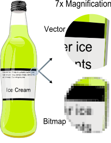

MVKS47 Käännösteknologian harjoituskurssi 2015 - 2016
16.11.2015: Muut tiedostomuodot: teoriaa
Kurssin aikataulu
- pe 30.10. Trados käännöstyökaluna
- ma 2.11. Asennus + teoriaa muisteista
- pe 6.11 Käytännön harjoituksia muisteista
- ma 9.11. Word-tiedostot + johdatus projektiajatteluun
- pe 13.11 Projektien luominen ja käännöseditori
- ma 16.11. Muut tiedostomuodot / teoriaa
- pe 20.11 Muut tiedostomuodot / harjoituksia
- ma 23.11. Edistyneemmät editoritoiminnot
- pe 27.11 Ei tuntia
- ma 30.11. Tekstien kohdistus: teoriaa
- pe 4.12 Tekstien kohdistus: käytäntöä
- ma 7.12. Termipankit: teoriaa
- pe 11.12. Termipankit: käytäntöä
- ma 14.12. Harjoituksia
- pe 18.12. Q&A
Tänään
- Projektipaketin avaaminen
- Projektin viimeistelystä
- pdf-pikakurssi
- html-pikakurssi
Trados-käännöksen workflow
1. Luodaan projekti
2. Käännetään
3. Verifioidaan ja tarkistetaan
4. Viimeistellään
5. Toimitetaan
PDF (portable document format)
"These documents could be viewed on any machine and any selected document could be printed locally. This capability would truly change the way information is managed
-John Warnock, Adobe
Vektorigrafiikka vs. rasterigrafiikka:

OCR (optical character recognition)
- Tiedostot ilman tekstidataa
- Kirjain kerrallaan ympäristö huomioiden:

OCR-ohjelmistoja
- Abbyy FineReader
- Tesseract (FreeOCR)
HTML (Hypertext markup language)
- Internet-sivujen koodaus, jota selaimet tulkitsemat
- vrt XML = Extensible markup language >- ei ennalta määrättyjä tageja
Tägit (tags)
<!DOCTYPE html>
<html>
</html>